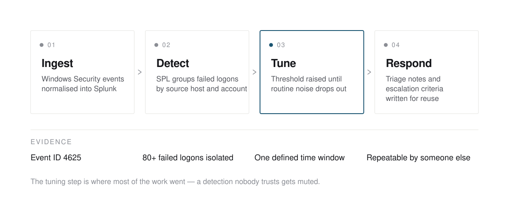
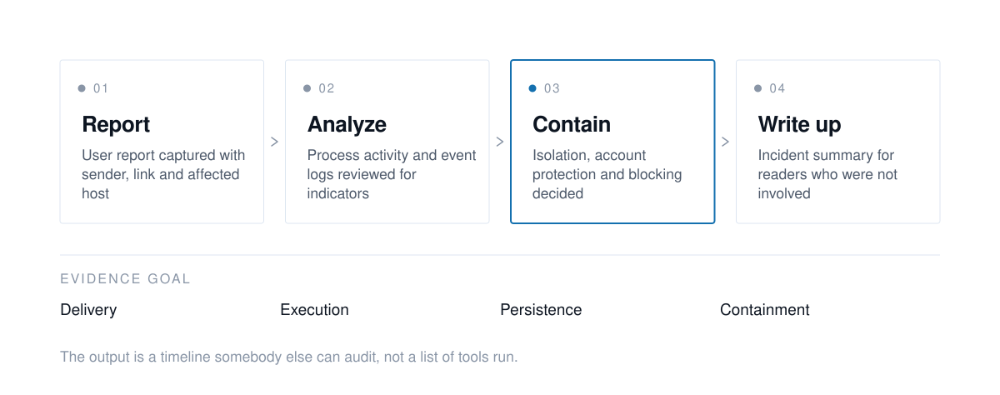
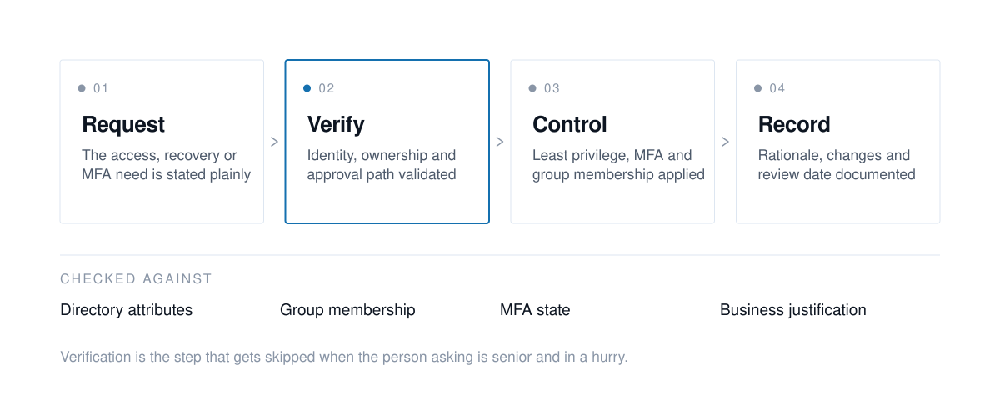

Built, documented, and open to inspection.
One shipped project and three hands-on labs, each written up the way I would hand it to a colleague: problem, approach, and what the evidence says.
AI product pipeline
A fully autonomous commerce pipeline. It researches and assembles a brand guide, generates product ideas and listing copy, produces design mockups through Canva automation, publishes to a marketplace over the Etsy REST API, audits its own SEO quality, and emails a daily operational health report.
It runs unattended on a VPS under systemd, cycling through BUILD, DESIGN and MAINTAIN modes depending on publish limits and configured cooldowns. The interesting engineering is not the AI. It is everything around it that stops the AI doing something expensive.
Seven phases, four stages.
Brand
CrewAI agents research positioning, visual identity and SEO direction, then assemble a reusable brand guide.
Generate
Product ideas, titles, tags and descriptions generated from the current brand guide.
Design
Canva automation produces mockups and buyer-ready template files from the generated direction.
Publish
Assets processed, listings validated, published via Etsy, SEO reviewed and status reported.
Controls, not good intentions.
Credentials
API keys and OAuth tokens stay in .env; .env.example documents the required variables without exposing real values.
Scanning
A gitleaks pre-commit hook with redaction catches accidental credentials before they leave the local environment.
OAuth
Etsy and Canva tokens are acquired through setup scripts, checked at preflight and refreshed on expiry rather than hardcoded.
Validation
The upload flow checks title length, tag count, price range and asset readiness before any live publish.
Resilience
Calls retry with exponential backoff on rate limits and server errors; publish limits and cooldowns prevent burst automation.
Operations
SQLite tables track queue state, published listings, run logs, SEO reviews and sales, so failures are diagnosable.
Tools and languages.
Languages
- Python 3.12+
- Bash shell scripting
- SQL via SQLite
- JSON payload design
AI and data
- Anthropic API
- CrewAI
- Serper API
- SQLite database
Platform APIs
- Etsy REST API v3
- Canva Connect REST API
- OAuth2 PKCE
- Gmail SMTP digest
Deployment
- Ubuntu VPS
- systemd service
- Runtime logs
- Daily health dashboard
Three more, worked end to end.
Self-directed work to practice the parts of the job you cannot rehearse on production.

Authentication log analysis
Windows authentication logs into Splunk, SPL queries grouping failed logons by source and account, thresholds tuned to cut noise, and the triage path written up for reuse.
Splunk · SPL · Windows Security logs
Phishing response walkthrough
A phishing-to-malware scenario worked end to end: user report, host indicator review, containment decisions, and an incident summary for people who were not in the room.
Sysinternals · Windows Event Logs · containment
Access control workflows
Access-request, recovery and MFA scenarios documented with the decisions that matter: who approves, what proves identity, and what gets recorded.
Active Directory · MFA policy · least privilege